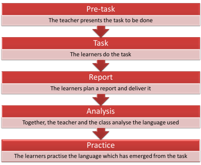
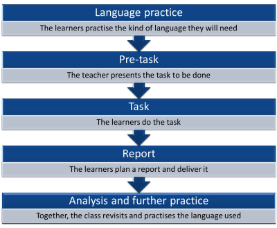

Strand 2: Planning alternatives to presentation > practice > production
 |
You have arrived here because you partially or fully agreed with I always follow a presentation > practice > production plan |
There are good reasons why PPP is so popular:
- It's easy to implement
- It seems to work
- It's reliable and familiar
- Most course-book and resource writers assume it is how you will approach their material
It is also, however, a bit predictable and dull and not always suited to all lesson aims.
 |
What alternatives are there? |
Lots. Which you choose will depend on what you are trying to achieve.
The first thing to assemble is a list of what you think must be
present in any lesson, especially one in which you hope the learners
will acquire new language or skills. That is most of them.
Think for a moment and make a list of what stages you think should
always be present in your lessons. Don't worry about the ordering
of them at this time.
Write down a few ideas and
then click here.
- Introduction and focus
- Learners need to know where they are going (and it helps if you give the impression that you know the answer to that) and what they are going to learn.
- Presentation of the focus
- At some point in the lesson you are going to have to present the language or the skill you are targeting. This means personally (a teacher-led phase) or via the materials you use.
- Controlled practice
- In this phase, the learners will get some practice at actually using the language or skill but it will be fairly closely controlled so they gain confidence and can focus on the targets.
- Freer practice
- At this stage the learners will use the targets in a way which is meaningful and personal to them.
- Checking learning
- At some stage(s) in the lesson there should be an opportunity for both you and the learners to see what they have learnt. This could happen briefly and frequently or be a clear and identifiable stage in itself.
You may have thought of other things you would like to include and that's fine as long as most of the things in that list are also there.
Ordering the stages
It seems pretty clear that an introduction will come at the beginning and a review and learning check will come at the end. The other phases are, however, moveable.
Here's the typical structure of what you do now, a PPP lesson:

But it doesn't have to be that way. How can you move the middle stages around to make life more interesting for you and your learners? One way is to test first, then present and then test again as a way to check learning. This is called Test > Teach > Test. Think for a moment how that would look and then click here.

This kind of lesson has three distinct advantages.
- It raises the learners' awareness of their need for the target language or skill so they are motivated to acquire it.
- It is focused on what the learners demonstrably need, not on what you think they need.
- It is centred on the students because they get to try to do a task, then get the language or skill they need to do it better and then get to deploy the language or skill at the end and see their progress.
PPP and TTT are the two most frequently used structures for lessons. If you haven't used TTT, why not plan to do so this week? You'll need to rearrange your procedures and probably insert more tasks in the lesson but it is not difficult to do.
Other lesson structures
There are other choices. One example is Dogme, (the background to which is covered in a short guide on this site). A Dogme lesson might have a structure like this:

Another example is Task-Based Learning for which there is also a guide on this site.
There is something of a small controversy here because authorities differ on the ordering of a lesson procedure. There are essentially two choices:
| Procedure 1 | Procedure 2 |
|  |  |
For more ideas and suggestions, try the guide to alternative methodologies on this site.
 |
Developing your repertoire |
There's no suggestion here that what you have been doing (following a PPP approach) is in any way wrong or misguided but it is slightly safe and predictable. Learners (and teachers) respond well to innovation and novelty so it is worth injecting something new from time to time. Here are some suggestions.
To experiment with a TTT approach:
- Take a plan for a lesson you have done as PPP.
- Re-arrange the phases of the lesson by inserting the controlled practice section at the beginning, followed by the presentation section and some more controlled practice (which you will probably have to design).
- Have a freer practice phase at the end followed by an explicit conversation with the learners about what they can do now that they couldn't do in the first part of the lesson.
To experiment with other approaches, you'll probably have to plan
from scratch. For Dogme, for example, you will find lots of ideas
in Thornbury and Meddings (2009). Dogme lessons are often based
around materials brought in by the learners themselves so you could, for
example, ask them to bring in a picture which means something special to
them, a quotation from someone which has a particular attraction or
whatever.
You can't plan much more for the lesson but you can think of small tasks
to do with the materials. In the lesson, you will have to be on
your toes and react to needs as they arise, inserting short teaching and
practising phases.
 |
Gauging progress |
There's a separate guide in this section of the site to
gauging and measuring progress in your
development. Go there for more ideas.
In terms of judging how introducing innovation in lesson structure is
working, you and your learners are the best judges.
You need to develop some ways of asking your students how they feel
about different approaches and you'll need to keep a diary or notes on
plans where you can record your own and their reactions as well as some
judgement of how well learning happened.
It's a long-term project and you can't change your teaching approach
overnight.
Nor should you try. As was said at the beginning, there is nothing
inherently wrong with what you do now but a little variety and newness
can be a spur to learning and renew your own motivation and commitment.
Reference: Meddings, L and Thornbury, S, 2009, Teaching Unplugged: Dogme in English Language Teaching, Peaslake UK: Delta